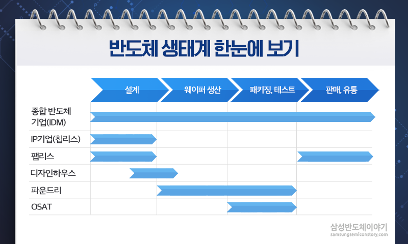
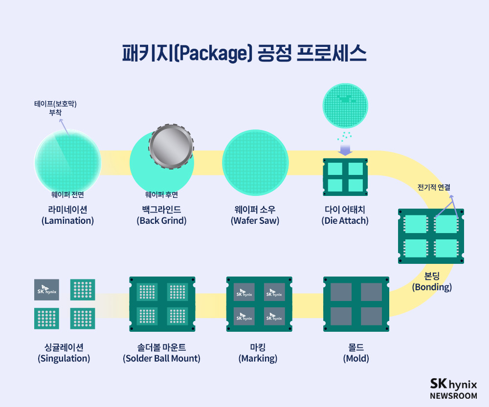
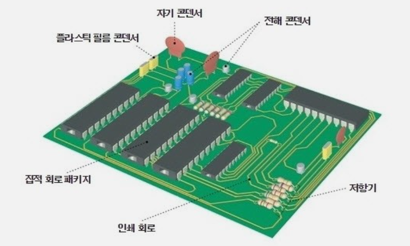
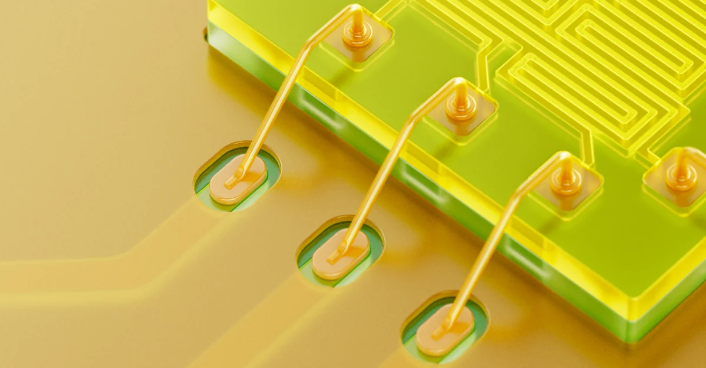
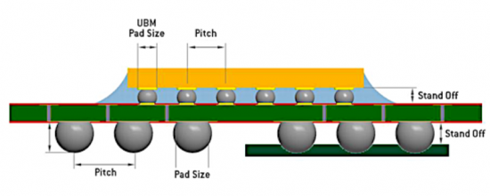
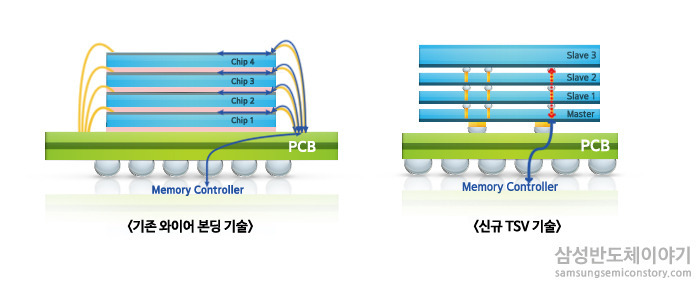
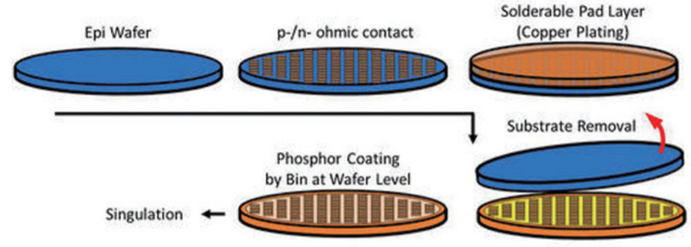

반도체 패키징 소재에 대한 이해
반도체의 재료: 반도체는 조건에 따라 전기가 흐르거나 안흐르는 물질이다. 반도체의 재료로는 실리콘을 주로 쓰는데, 이는 가격이 싸고 안정적이기 때문이다. 이러한 실리콘으로 만든 반도체를 진성반도체라고 한다.
도핑: 진성반도체는 전류가 흐르지 않아서 불순물을 첨가해주는 과정이 필요하다. 이때 도핑으로 5가 원소를 첨가하면 자유전자가 생겨 전류가 흐르는데, 이를 n형 반도체라고 한다. 3가 원소를 첨가하면 전공이 발생하여 전자의 이동을 유도하는데, 이를 p형 반도체라고 한다.
반도체 소자: 반도체를 가공해서 트랜지스터, 다이오드, 저항, 커패시터 등 다양한 소자를 만들 수 있다. 보통 자주 보이는 건 CPU와 GPU의 기본 단위인 트랜지스터인데, 전류의 스위치와 증폭 역할을 해준다. 반면 전류를 제한하는 저항이나, 전하를 저장하는 커패시터도 존재한다. 커패시터의 경우 저장할 수 있다는 특성을 이용해 컴퓨터의 기억장치인 Main Memory, RAM을 만드는데 쓰인다. 이렇게 가공한 반도체 소자를 집적한 것을 IC칩이라고 부른다.( Integrated Circuit) CPU는 수십억 개의 트랜지스터를 집적한 것이고 DRAM은 트랜지스터 + 커패시터 조합 수십억개를 집적한 것이다.
패키징 개념:IC 칩은 매우 작고 연약하다. 이를 보호하고 전기 신호를 전달해주기 위해서는 IC칩을 기판에 연결해주고, 패키징을 하는 것이 필요하다. 패키징은 칩 보호 + 전기적 연결 + 방열 + 신뢰성 확보를 위한 후처리 작업이라고 보면 된다.
반도체 패키징 산업: 반도체 산업은 디자인, 팹, 패키징으로 구성되어있다. 디자인 업계가 반도체의 회로도를 설계하면, 팹 업계가 설계된 회로를 실제 실리콘 웨이퍼 위에 직접 구현한다. 이후 제조된 칩이 패키징 업체에 전달되고 패키징 업체는 이러한 칩을 보호하고 전기적으로 연결하는 패키징 작업을 실시한다.

웨이퍼와 다이: 이는 반도체 용어인데, 우리가 보통 아는 반도체 8대 공정을 베어 웨이퍼에 적용하면 웨이퍼 위에 수백~수천 개의 회로가 형성된다. 이 웨이퍼를 수 많은 조각으로 잘라낸 조각을 다이(웨이퍼 위에 반도체 회로가 새겨진 작은 네모칸 하나하나)라고 부른다. 이러한 다이를 패키징하면 최종으로 (다이에 새겨진 회로에 따라) CPU 또는 GPU 등이 된다.
패키징의 목적: 위에서 언급했지만 패키징은 칩을 보호하고 전기적으로 연결하는 것과, 방열의 3가지 목적이 존재한다. 패키징 시 외부 환경으로부터 칩을 보호할 수 있다. 또 기판이라고 불리는 지지체가 있는데, 여기에 다이를 연결해줘야 전기적으로 연결되어 반도체로서 기능할 수 있다. 이것또한 패키징의 일부이다.
패키징 공정의 순서: 먼저 웨이퍼가 오면 이를 잘라서 개별 다이로 분리한다. 이후 다이를 기판에 전기적으로 연결해준다. 이를 본딩이라고 하며 전통적으로는 와이어 본딩(Wire Bonding), 플립칩(Flip Chip) 방식이 존재한다. 이후 칩을 보호하기 위해 위에 고분자로 감싸주는데 이를 몰딩이라고 한다. 이후 마킹과정을 거쳐 칩에 로고와 모델명을 인쇄하고 기판에 납땜용 솔더볼을 부착한 다음 최종 절단 후 패키지를 출하한다. 메모리 모듈, CPU, GPU, SD 카드 등, 새겨진 회로에 따라 다양한 제품이 만들어진다.

PCB: PCB는 기판(substrate)위에 구리 배선이 가늘게 인쇄된 판이다. 여기에는 각종 반도체 부품을 끼워넣을 수 있다. 여기에 다이를 붙이면 전기적 신호를 전달할 수 있다. 앞서 반도체에 전기적 신호를 전달할 수 있게 반도체와 기판을 연결한다고 했는데 이 연결에는 와이어 본딩 방식과 플립칩 방식이 있다. 이렇게 연결된 반도체-기판을 다시 솔더볼 방식(납땜 방식)으로 PCB에 붙인다. 즉 다이->기판->PCB 순서로 부착된다.

와이어 본딩: 다이와 기판(substrate)을 연결하는 방법이다. 다이 위에 전극패드가 존재하는데, 여기와 기판의 패드 사이를 금선으로 연결하는 방법으로, 공정이 단순하고 저렴하다. 이건 메모리 제품에 사용된다.

플립칩:마찬가지로 다이와 기판을 연결하는 방식인데, 반도체를 직접 뒤집은 다음 솔더 범프라는 작은 납땜 볼을 이용해 연결해주는 방식이다.(원래는 납을 썼는데 환경 규제 때문에 SnAgCu 합금(SAC 솔더) 를 쓴다고 한다.) 이는 와이어본딩보다 배선이 짧아 고속, 고성능을 자랑하지만 비용이 비싼 문제점이 있다. 이는 비 메모리 작품에 사용된다.

어드밴스트 패키징 : 요즘은 전통적 방식(와이어 본딩·플립칩)의 한계를 극복하기 위해 어드밴스드 패키징(Advanced Packaging) 기술로 진화 중이라고 한다. 이러한 진보 패키징에는 2.5D/3D 패키징 (TSV, 실리콘 인터포저) , Fan-Out 패키징 (FO-WLP), Chiplet·Heterogeneous Integration 등이 있다고 한다. 각각을 알아보자.
TSV: 진보된 패키징인데, 기존 와이어를 이용해 칩을 연결하는 대신 칩에 미세한 구멍을 뚫어 상단 칩과 하단 칩을 전극으로 연결하는 패키징 기술이다. ‘TSV’란 Through Silicon Via의 약자다.

기존 와이어 본딩과 TSV의 비교이다. 다중 적층을 했음에도 연결 길이가 짧아 성능이 좋다.
FO-WLP: 개별 칩으로 자르기 전, 웨이퍼 상태에서 바로 패키징 공정을 진행하는 것이다. 즉 기존처럼 다이로 잘라서 PCB에 붙이는 게 아니고 웨이퍼 위에서 바로 회로를 형성하는 것이다.

이러한 진보된 패키징은 전기적 특성이 우수하고 고성능과 고속 연산에 적합하지만 공정이 복잡하고 생산성 측면에서 불리한 단점이 있다.
컨벤셔널 패키징 공정: 백그라인딩-다이싱-본딩-몰딩-마킹-SBA-PKG 소팅(싱귤레이션)
: 웨이퍼가 입고되면 앞면은 회로고 뒷면은 실리콘 층이다. 이때 뒷면을 갈아내면 두께가 줄어들기에 먼저 갈아주는데 이를 백그라인딩이라고 한다. 이후 개별 칩으로 잘라주는 다이싱을 해준다. 이후 절단된 개별 다이를 기판에 붙여준다. 이때 와이어 본딩 또는 플립칩 방식이 사용된다. 만약 와이어본딩을 했다면, 다이와 기판을 DAF(다이 어태치 필름)으로 붙여주고 이후 다이의 패드에 금선을 연결해서 기판과 연결해준다. 플립칩 방식을 썼다면 다이에 솔더 범프 납땜을 해서 기판과 연결해준다. 이후 열을 가해주면 솔더가 녹아 다이와 기판이 전기적으로 연결된다. 이러면 다이가 기판과 전기적으로 연결된 상태인데, 아직 보호가 안된 상태이다. 이때 보호를 위해 고분자로 밀봉해주는데 이를 몰딩이라고 한다.이때 다이 하나만 몰딩하는 게 아니라 보통 한 판(Panel/Strip) 위에 여러 다이가 올려진 상태에서 한꺼번에 몰딩을 한다. 몰딩에는 에폭시 몰드 컴파운드(EMC, Epoxy Molding Compound)를 쓴다. 이후 위에 제품명을 마킹하고 이를 PCB에 붙여야 하므로 기판(위에 다이 연결되어있음) 밑에 솔더볼을 부착하여 PCB와 연결해준다. 이때 이를 BGA라고 부르고 이 방식을 SBA(솔더 볼 어태치)라고 부른다. 이후 한꺼번에 몰딩되면서 붙어진 칩들을 다시 개별칩들로 분리해주는데 이를 패키지 소팅이라고 한다.

(헷갈릴까봐 정리:)
위쪽: 실리콘 다이(Die)
중간: 패키지 기판(Substrate)
아래쪽: 솔더볼이 붙어 있음
=이 구조가 BGA고 이를 PCB에 붙인다. 이렇게 붙이는 방식을 SBA(솔더 볼 어태치)라고 부른다.
히트스프레더 : 지금까지는 메모리 같은 부품을 제작하는 컨벤셔널 패키징에 대해 소개하였다. 그러나 발열이 큰 고성능 칩(CPU, GPU, AI 가속기, HBM) 같은 경우에는 발열을 제거하기 위해 몰딩 대신 히트스프레더가 적용된다. 이는 몰딩용 고분자 대신 금속판(구리, 알루미늄, 특수 코팅 등)으로 덮는 건데, 이때 금속판과 다이를 연결해주기 위해 사이에 TIM(써멀구리스/액체금속)을 발라준다. 이 TIM은 금속판과 다이를 연결해주고 또 열을 잘 전달해주는 역할을 한다. 히트스프레더는 열을 넓게 퍼뜨려 제거해준다.
히트싱크: 히트스프레더 위에는 히트싱크가 있다. 이는 히트스프레더에서 전달된 열을 받아 공기 또는 냉각수로 열을 방출해주는 역할을 한다. 보통 액체 쿨링 시스템과 함께 사용한다.
반도체 패키징의 소재 관련 정리: 현재 널리 쓰이는 반도체 패키징 재료는 다음과 같다.
1. 기판 (Substrate, PCB 관련)
칩과 메인 PCB를 연결해주는 중간층으로 유기기판, 세라믹 기판, 금속기판이 존재한다.
1)유기 기판 (Organic Substrate)
-BT 레진 (Bismaleimide Triazine Resin)
-ABF 필름 (Ajinomoto Build-up Film, 인텔·TSMC 고성능 칩에 사용)
-유리섬유(Prepreg, Glass Fiber)
2) 세라믹 기판 (Ceramic Substrate)
-Al₂O₃ (알루미나)
-AlN (질화알루미늄, 열전도율 ↑)
-Si₃N₄ (질화규소, 기계적 강도 ↑)
3)금속 기판 (Metal Substrate)
-구리(Cu)
-구리-몰리브덴 합금 (Cu-Mo)
-구리-텅스텐 합금 (Cu-W)
2. 인터커넥트: 칩과 기판 간 전기 신호를 전달해주는 것으로 와이어 본딩 등이 이에 해당한다.
1)와이어 본딩 (Wire Bonding)
금(Au): 신뢰성 최고, 산화 안 됨. 그러나 비쌈
구리(Cu): 저렴, 하지만 산화 문제 있음
알루미늄(Al): 일부 저가형 칩에 사용
2)플립칩 범프 (Flip-Chip Bump)
Sn-Ag-Cu 합금 (SAC, 무연 솔더)Sn-Pb 합금 (과거 사용, 환경 규제로 중단)
Cu Pillar Bump (구리 기둥 + 솔더 캡)
Micro-bump (TSV/WLP에 사용되는 미세 범프)
3) 솔더 볼 (Solder Ball, BGA용)
Sn-Ag-Cu 합금 (무연 솔더 주류)
Sn-Bi (저온 솔더, 일부 응용)
4)플럭스 (Flux)
유기산 기반(카르복실산 등) = 솔더링 접합 보조
3. 밀봉 및 방열 소재 : 칩을 보호하고, 열을 효과적으로 처리
1)몰딩 컴파운드 (Molding Compound)
에폭시 수지 (Epoxy Resin)
실리카(SiO₂) 필러 (강도, 절연성 ↑)
알루미나(Al₂O₃), 질화붕소(BN) 필러 (방열 성능 ↑)
2) TIM (Thermal Interface Material)
실리콘계 그리스 (Thermal Grease)
은(Ag) 필러 에폭시
액체금속 (Liquid Metal, Ga-In-Sn 합금)
3)히트스프레더 (Heat Spreader, IHS)
구리(Cu) (열전도율 ~400 W/m·K)
알루미늄(Al)
다이아몬드 코팅 (DLC, 극한 방열용)
4) 히트싱크/방열판 (Heat Sink)
구리(Cu), 알루미늄(Al), 복합재